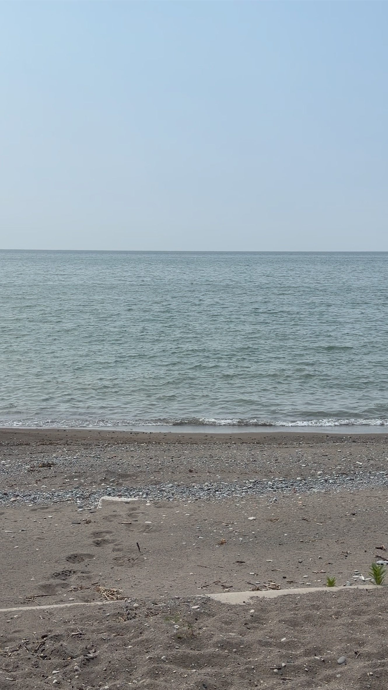
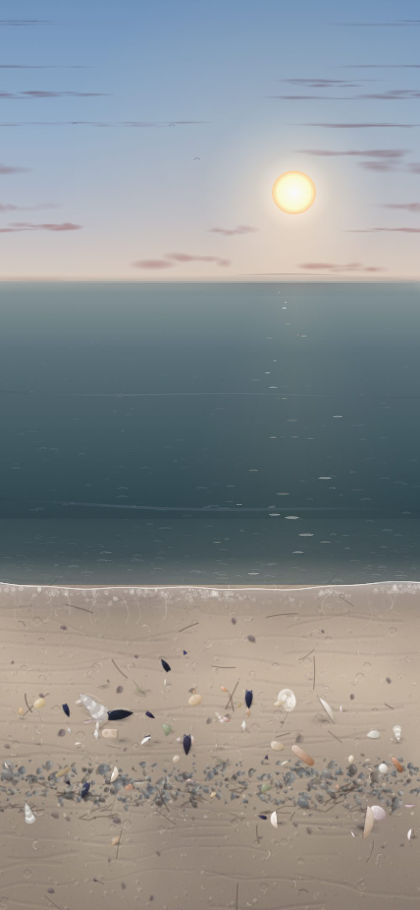

Where it comes from
The photograph and the recording behind Idlewild Shore.
Idlewild Shore draws one lake: the Lake Erie shore. Not a library of beaches and not a generated soundscape — one shore, on one afternoon, that I stood on with a phone in my hand.
That is an easy thing to claim and a hard thing to prove, so this page puts the source beside the result and lets you decide.
The picture


What came from the photograph:
- The composition. Where the horizon sits, and how much of the frame is water against how much is beach.
- The colour of the water — that particular grey-green that goes colder and bluer toward the horizon. It is sampled, not chosen.
- The band of pebbles across the sand. It is in the photograph, a little above the middle of the beach, and it is in the app. It is the detail that makes it this shore rather than a shore.
What did not come from the photograph, because it would not be true:
- The sun. There is no sun in the photograph — it was a hazy day. In the app the sun is worked out from the real time and your time zone, so its height and colour are whatever they actually are when you open it. A December afternoon sits low and warm; a June noon is high and pale.
- The shells. Ten kinds, drawn rather than photographed.
- The sand. It reads warmer in the app than in the photograph. That is a departure and I would rather say so than have you notice it yourself.
The sound
The water you hear is the water in that photograph, recorded standing at the edge of it.
The recording, as made. 31 seconds, untouched.
What the app plays. 24 seconds, cut to loop without a seam.
The difference between the two is a cut and nothing else. Nothing was layered in, nothing was synthesised, and there is no music underneath it.
The app follows your ringer switch, so it can be watched with the sound off. It was built to work that way — but this is the part you would only get by being there, which is why it is on this page.
Why it is one place
A library of beaches would have been easier and would have looked like more. One place is the harder and more honest version: it means the water has a colour it actually had, on a day that actually happened, and it means there is a person who can be asked about it.
The photograph and the recording are mine, both made at the Lake Erie shore. The originals exist.